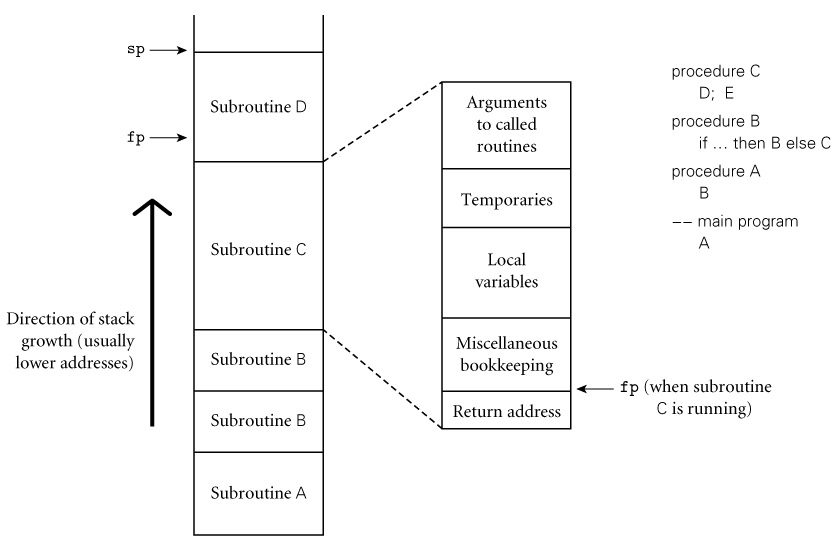
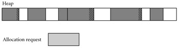

|
|
|
|
3.2 Object Lifetime and Storage Management
In any discussion of names and bindings, it is important to
distinguish between names and the objects to which they refer, and to identify
several key events:
§ Creation of objects
§ Creation of bindings
§ References to variables,
subroutines, types, and so on, all of which use bindings
§ Deactivation and reactivation of
bindings that may be temporarily unusable
§ Destruction of bindings
§ Destruction of objects
The period of time between the creation and the destruction
of a name-to-object binding is called the binding's lifetime. Similarly,
the time between the creation and destruction of an object is the object's
lifetime. These lifetimes need not necessarily coincide. In particular, an
object may retain its value and the potential to be accessed even when a given
name can no longer be used to access it. When a variable is passed to a
subroutine by reference, for example (as it typically is in Fortran or
with var parameters in Pascal or '&' parameters in C++), the binding between the parameter name
and the variable that was passed has a lifetime shorter than that of the
variable itself. It is also possible, though generally a sign of a program bug,
for a name-to-object binding to have a lifetime longer than that of the
object. This can happen, for example, if an object created via the C++ new operator is passed as a & parameter and then deallocated (delete-ed) before the subroutine returns. A binding to an object
that is no longer live is called a dangling reference. Dangling
references will be discussed further in Sections 3.6 and 7.7.2.
Object lifetimes generally correspond to one of three
principal storage allocation mechanisms, used to manage the object's
space:
1.
Static objects are given an absolute address that is retained
throughout the program's execution.
2.
Stack objects are allocated and deallocated in last-in, first-out
order, usually in conjunction with subroutine calls and returns.
3.
Heap objects may be allocated and deallocated at arbitrary
times. They require a more general (and expensive) storage management
algorithm.
Global variables are the obvious example of static objects,
but not the only one. The instructions that constitute a program's machine
language translation can also be thought of as statically allocated objects. In
addition, we shall see examples in Section 3.3.1 of variables that are local to a single subroutine,
but retain their values from one invocation to the next; their space is
statically allocated. Numeric and string-valued constant literals are also
statically allocated, for statements such as A =
B/14.7 or printf("hello,
world\n"). (Small constants are often stored
within the instruction itself; larger ones are assigned a separate location.)
Finally, most compilers produce a variety of tables that are used by run-time
support routines for debugging, dynamic-type checking, garbage collection,
exception handling, and other purposes; these are also statically allocated.
Statically allocated objects whose value should not change during program
execution (e.g., instructions, constants, and certain run-time tables) are
often allocated in protected, read-only memory, so that any inadvertent attempt to
write to them will cause a processor interrupt, allowing the operating system
to announce a run-time error.
Example
3.1: Static allocation of local variables
|
|
Logically speaking, local variables are created when their
subroutine is called, and destroyed when it returns. If the subroutine is
called repeatedly, each invocation is said to create and destroy a separate instance
of each local variable. It is not always the case, however, that a language
implementation must perform work at run time corresponding to these create and
destroy operations. Recursion was not originally supported in Fortran (it was
added in Fortran 90). As a result, there can never be more than one invocation
of a subroutine active in an older Fortran program at any given time, and a
compiler may choose to use static allocation for local variables, effectively
arranging for the variables of different invocations to share the same
locations, and thereby avoiding any run-time overhead for creation and
destruction.
|
|
In many languages a named constant is required to have a
value that can be determined at compile time. Usually the expression that specifies
the constant's value is permitted to include only other known constants and
built-in functions and arithmetic operators. Named constants of this sort,
together with constant literals, are sometimes called manifest constants
or compile-time constants. Manifest constants can always be allocated
statically, even if they are local to a recursive subroutine: multiple
instances can share the same location.
In other languages (e.g., C and Ada), constants are simply
variables that cannot be changed after elaboration time. Their values, though
unchanging, can sometimes depend on other values that are not known until run
time. These elaboration-time constants, when local to a recursive
subroutine, must be allocated on the stack. C# provides both options, explicitly,
with the const
and readonly keywords.
Along with local variables and elaboration-time constants,
the compiler typically stores a variety of other information associated with
the subroutine, including:
§ Arguments and return values. Modern compilers keep these in registers whenever possible,
but sometimes space in memory is needed.
§ Temporaries. These are usually intermediate values produced in complex
calculations. Again, a good compiler will keep them in registers whenever
possible.
§Design & Implementation
§Recursion in Fortran
§The lack of recursion in
(pre-Fortran 90) Fortran is generally attributed to the expense of stack
manipulation on the IBM 704, on which the language was first implemented. Many
(perhaps most) Fortran implementations choose to use a stack for local
variables, but because the language definition permits the use of static
allocation instead, Fortran programmers were denied the benefits of
language-supported recursion for over 30 years.
|
|
§ Bookkeeping information. This may include the subroutine's return address, a
reference to the stack frame of the caller (also called the dynamic link),
additional saved registers, debugging information, and various other values
that we will study later.
Example
3.2: Layout of the run-time stack
|
|
If a language permits recursion, static allocation of local
variables is no longer an option, since the number of instances of a variable
that may need to exist at the same time is conceptually unbounded. Fortunately,
the natural nesting of subroutine calls makes it easy to allocate space for
locals on a stack. A simplified picture of a typical stack appears in Figure
3.1. Each instance of a subroutine at run time has its own frame
(also called an activation record) on the stack, containing arguments
and return values, local variables, temporaries, and bookkeeping information.
Arguments to be passed to subsequent routines lie at the top of the frame,
where the callee can easily find them. The organization of the remaining
information is implementation-dependent: it varies from one language, machine,
and compiler to another.

Figure 3.1: Stack-based
allocation of space for subroutines. We assume here that subroutines have been called as shown
in the upper right. In particular, B has called itself once, recursively,
before calling C. If D returns and C calls E, E's frame (activation record)
will occupy the same space previously used for D's frame. At any given time,
the stack pointer (sp) register points to the first unused location on the
stack (or the last used location on some machines), and the frame pointer (fp)
register points to a known location within the frame of the current subroutine.
The relative order of fields within a frame may vary from machine to machine
and compiler to compiler.
|
|
Maintenance of the stack is the responsibility of the
subroutine calling sequence―the code executed by the caller
immediately before and after the call―and of the prologue (code executed
at the beginning) and epilogue (code executed at the end) of the
subroutine itself. Sometimes the term "calling sequence" is used to
refer to the combined operations of the caller, the prologue, and the epilogue.
We will study calling sequences in more detail in Section 8.2.
On the CD While the location of a stack frame cannot be
predicted at compile time (the compiler cannot in general tell what other
frames may already be on the stack), the offsets of objects within a
frame usually can be statically determined. Moreover, the compiler can
arrange (in the calling sequence or prologue) for a particular register, known
as the frame pointer to always point to a known location within the
frame of the current subroutine. Code that needs to access a local variable
within the current frame, or an argument near the top of the calling frame, can
do so by adding a predetermined offset to the value in the frame pointer. As we
discuss in Section 5.3.1, almost every processor provides a displacement
addressing mechanism that allows this addition to be specified implicitly
as part of an ordinary load
or store instruction. The stack grows
"downward" toward lower addresses in most language implementations.
Some machines provide special push and pop
instructions that assume this direction of growth. Local variables,
temporaries, and bookkeeping information typically have negative offsets from
the frame pointer. Arguments and returns typically have positive offsets; they
reside in the caller's frame.
Even in a language without recursion, it can be advantageous
to use a stack for local variables, rather than allocating them statically. In
most programs the pattern of potential calls among subroutines does not permit
all of those subroutines to be active at the same time. As a result, the total
space needed for local variables of currently
active subroutines is seldom as large as the total space across all
subroutines, active or not. A stack may therefore require substantially less
memory at run time than would be required for static allocation.
A heap is a region of storage in which subblocks can
be allocated and deallocated at arbitrary times. [2]
Heaps are required for the dynamically allocated pieces of linked data
structures, and for objects like fully general character strings, lists, and
sets, whose size may change as a result of an assignment statement or other
update operation.
Example 3.3: External
fragmentation in the heap
|
|
There are many possible strategies to manage space in a
heap. We review the major alternatives here; details can be found in any
data-structures textbook. The principal concerns are speed and space, and as
usual there are tradeoffs between them. Space concerns can be further
subdivided into issues of internal and external fragmentation. Internal
fragmentation occurs when a storage-management algorithm allocates a block that
is larger than required to hold a given object; the extra space is then unused.
External fragmentation occurs when the blocks that have been assigned to active
objects are scattered through the heap in such a way that the remaining, unused
space is composed of multiple blocks: there may be quite a lot of free space,
but no one piece of it may be large enough to satisfy some future request (see Figure
3.2).

Figure 3.2: Fragmentation. The shaded blocks are in use; the
clear blocks are free. Cross-hatched space at the ends of in-use blocks
represents internal fragmentation. The discontiguous free blocks indicate
external fragmentation. While there is more than enough total free space
remaining to satisfy an allocation request of the illustrated size, no single
remaining block is large enough.
|
|
Many storage-management algorithms maintain a single linked
list―the free list―of heap blocks not currently in use. Initially the
list consists of a single block comprising the entire heap. At each allocation
request the algorithm searches the list for a block of appropriate size. With a
first fit algorithm we select the first block on the list that is large
enough to satisfy the request. With a best fit algorithm we search the
entire list to find the smallest block that is large enough to satisfy the
request. In either case, if the chosen block is significantly larger than
required, then we divide it in two and return the unneeded portion to the free
list as a smaller block. (If the unneeded portion is below some minimum
threshold in size, we may leave it in the allocated block as internal
fragmentation.) When a block is deallocated and returned to the free list, we
check to see whether either or both of the physically adjacent blocks are free;
if so, we coalesce them.
Intuitively, one would expect a best fit algorithm to do a
better job of reserving large blocks for large requests. At the same time, it
has higher allocation cost than a first fit algorithm, because it must always
search the entire list, and it tends to result in a larger number of very small
"left-over" blocks. Which approach―first fit or best fit―results in
lower external fragmentation depends on the distribution of size requests.
In any algorithm that maintains a single free list, the cost
of allocation is linear in the number of free blocks. To reduce this cost to a
constant, some storage management algorithms maintain separate free lists for
blocks of different sizes. Each request is
rounded up to the next standard size (at the cost of internal fragmentation)
and allocated from the appropriate list. In effect, the heap is divided into
"pools," one for each standard size. The division may be static or
dynamic. Two common mechanisms for dynamic pool adjustment are known as the buddy
system and the Fibonacci heap. In the buddy system, the standard
block sizes are powers of two. If a block of size 2k is
needed, but none is available, a block of size 2k+1
is split in two. One of the halves is used to satisfy the request; the other is
placed on the kth free list. When a block is deallocated, it is
coalesced with its "buddy"―the other half of the split that created
it―if that buddy is free. Fibonacci heaps are similar, but use Fibonacci
numbers for the standard sizes, instead of powers of two. The algorithm is
slightly more complex, but leads to slightly lower internal fragmentation,
because the Fibonacci sequence grows more slowly than 2k.
The problem with external fragmentation is that the ability
of the heap to satisfy requests may degrade over time. Multiple free lists may
help, by clustering small blocks in relatively close physical proximity, but
they do not eliminate the problem. It is always possible to devise a sequence
of requests that cannot be satisfied, even though the total space required is
less than the size of the heap. If memory is partitioned among size pools
statically, one need only exceed the maximum number of requests of a given
size. If pools are dynamically readjusted, one can "checkerboard" the
heap by allocating a large number of small blocks and then deallocating every
other one, in order of physical address, leaving an alternating pattern of
small free and allocated blocks. To eliminate external fragmentation, we must
be prepared to compact the heap, by moving already-allocated blocks.
This task is complicated by the need to find and update all outstanding
references to a block that is being moved. We will discuss compaction further
in Sections 7.7.2 and 7.7.3.
Allocation of heap-based objects is always triggered by some
specific operation in a program: instantiating an object, appending to the end
of a list, assigning a long value into a previously short string, and so on.
Deallocation is also explicit in some languages (e.g., C, C++, and Pascal.) As
we shall see in Section 7.7, however, many languages specify that objects
are to be deallocated implicitly when it is no longer possible to reach them
from any program variable. The run-time library for such a language must then
provide a garbage collection mechanism to identify and reclaim
unreachable objects. Most functional and scripting languages require garbage
collection, as do many more recent imperative languages, including Modula-3, Java,
and C#.
The traditional arguments in favor of explicit deallocation
are implementation simplicity and execution speed. Even naive implementations
of automatic garbage collection add significant complexity to the
implementation of a language with a rich type system, and even the most
sophisticated garbage collector can consume nontrivial amounts of time in
certain programs. If the programmer can correctly identify the
end of an object's lifetime, without too much run-time bookkeeping, the result
is likely to be faster execution.
The argument in favor of automatic garbage collection,
however, is compelling: manual deallocation errors are among the most common
and costly bugs in real-world programs. If an object is deallocated too soon,
the program may follow a dangling reference, accessing memory now used
by another object. If an object is not deallocated at the end of its
lifetime, then the program may "leak memory," eventually running out
of heap space. Deallocation errors are notoriously difficult to identify and
fix. Over time, both language designers and programmers have increasingly come
to consider automatic garbage collection an essential language feature.
Garbage-collection algorithms have improved, reducing their run-time overhead;
language implementations have become more complex in general, reducing the
marginal complexity of automatic collection; and leading-edge applications have
become larger and more complex, making the benefits of automatic collection
ever more compelling.
1.
What
is binding time?
2.
Explain
the distinction between decisions that are bound statically and those that are
bound dynamically.
3.
What
is the advantage of binding things as early as possible? What is the advantage
of delaying bindings?
4.
Explain
the distinction between the lifetime of a name-to-object binding and its
visibility.
5.
What
determines whether an object is allocated statically, on the stack, or in the
heap?
6.
List
the objects and information commonly found in a stack frame.
7.
What
is a frame pointer? What is it used for?
8.
What
is a calling sequence?
9.
What
are internal and external fragmentation?
10.
What
is garbage collection?
11.
What
is a dangling reference?
[2]Unfortunately, the term "heap" is also used for
the common tree-based implementation of a priority queue. These two uses of the
term have nothing to do with one another.